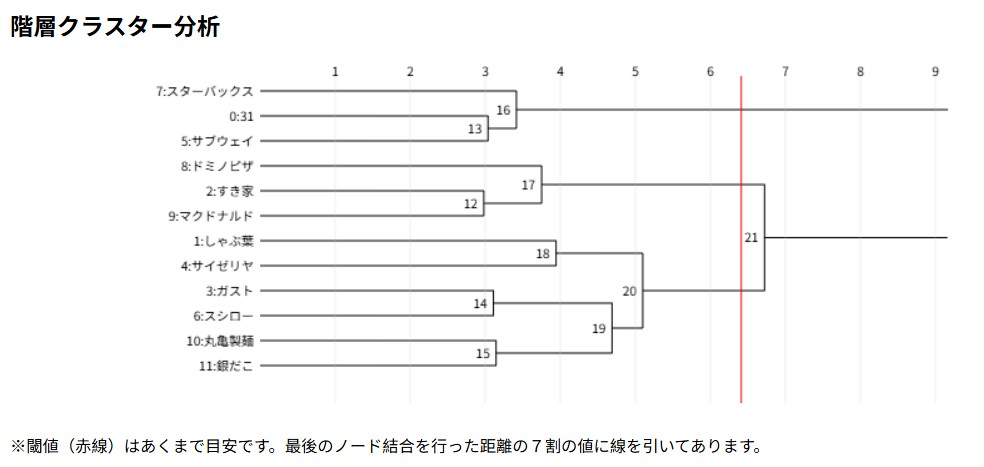

散布図

 ここをクリックでクロス集計表
ここをクリックでクロス集計表
分析結果の説明
・クラスターでカテゴライズした３タイプのうち原点から見て右側は
挙げた店舗の中で比較的軽めのメニューが提供されている。また、飲食物以外の店員の態度、
SNS映えなどの要素が強いため、繊細で承認欲求の強い方におすすめである。
・左上に分布されていたのはメニューの種類が多いという共通点を発見した。家族連れが多い印象があるのは、
店の広さやコスパが良いという要素が強いからだと考えた。
・左下に分布されたのはいわゆるファストフード店であった。
そのタイパとおいしさの要素から満足感が高く、人気があり多くの店舗数に繋がるという
経緯なのだと考えた。